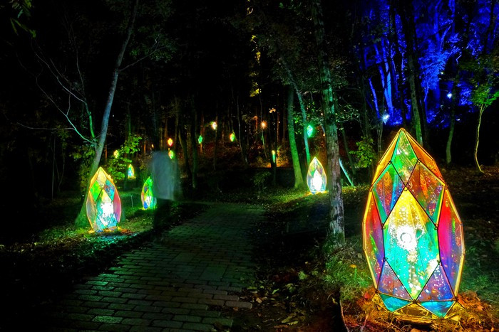

童話村ライトアップ

宮沢賢治の作品の世界感が楽しめる夜の童話村に、光と自然が織りなす賢治の
作品世界が出現。色とりどりの発光ダイオード（ＬＥＤ）ライトが闇を照らし
「どんぐりと山猫」「銀河鉄道の夜」などの情景を演出する。芝生広場にある
高さ４メートル程のどんぐりオブジェが人気を集めている。テイクアウトの屋
台村が出店するほか、同施設内の「賢治の学校」の開園時間が延長されます。
観光情報
ジャンル
イベント
所在地
岩手県花巻市花城町9番30号
電話番号
0198-24-2111
営業日
8月10日～8月13日、8月27日～9月21日
[アクセス経路]
新花巻駅から車で3分、花巻駅から車で15分
JR新花巻駅よりバスで2分（JR花巻駅よりバスで17分）、土沢線｢賢治記念館口｣
バス停下車後徒歩5分